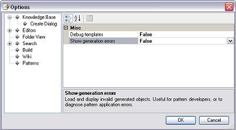

 Debug Templates PropertyGenerate debug information when compiling templates, which allows running them step by step. Useful for pattern developers. Show Generation Errors PropertyWhen objects cannot be generated through the "Apply pattern" check box, generally because they have errors, you can view them in read-only mode without the ability to save them. For example, you apply the Work With pattern to the Airline transaction. Sometimes, whether by errors in the same pattern templates or by input errors that were not properly validated, the WWAirline cannot be saved. Of course, this is shown in the Output window as follows: Saving Web Panel WWAirline... failed: <some error> i.e. Add() is not a valid method. <another error> <another error> The problem is that, without seeing the object (which does not exist yet because it could not be saved), it is difficult to understand which was the error. If the "Show generation error" property is set to True, at the end you can see a dialog which reads "X objects cannot be saved. Do you want to see its content?". If you choose to view it, they are opened in edit mode, but this action is for only reference because they are read-only. When you are creating your own pattern, it is likely that, due to a programming error, this pattern generates wrong code. In this case, it's important that you can see what was generated. This is useful for the end user too, although, perhaps, in minor cases.
|
| Backlinks |
| Category:IDE Configuration Options |